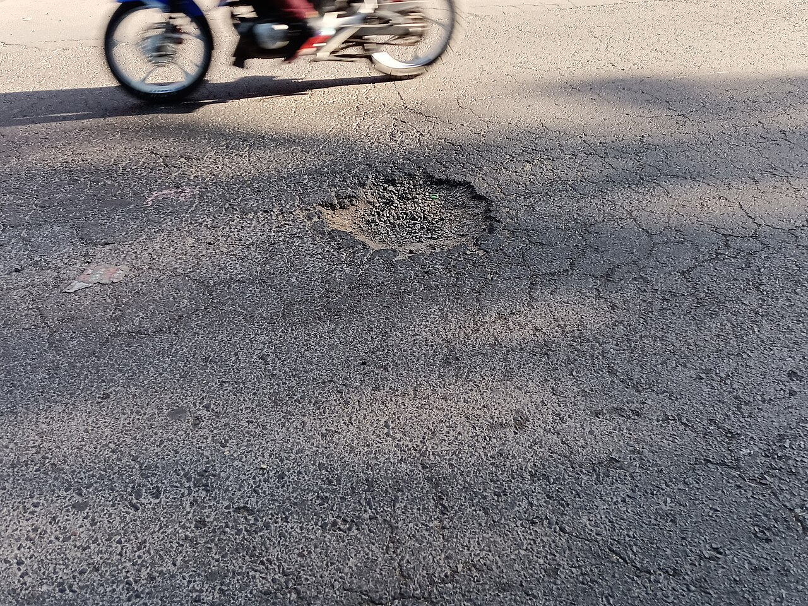
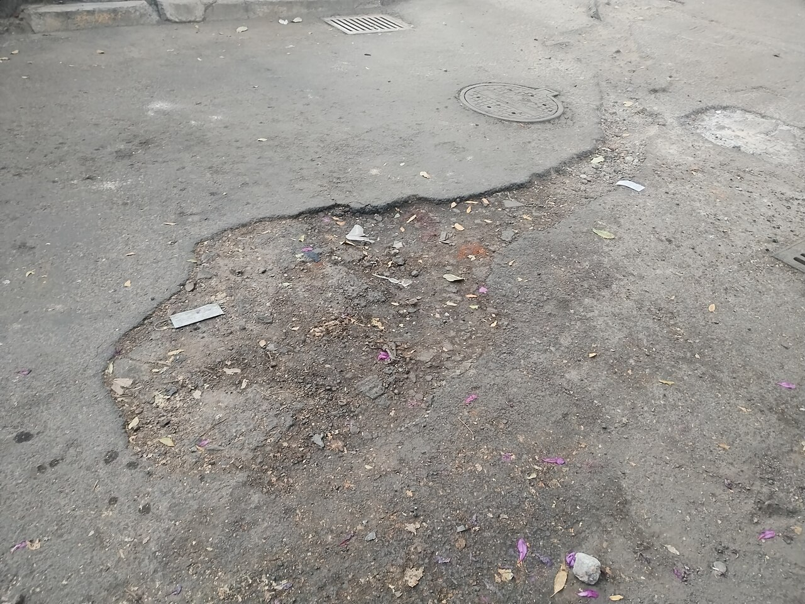
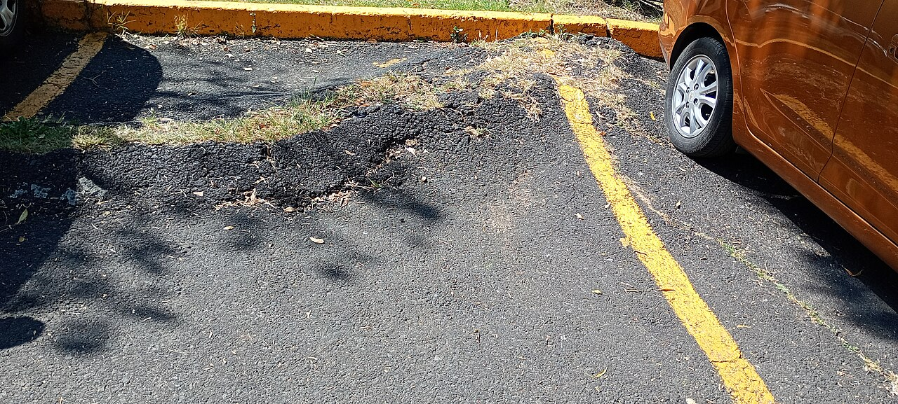
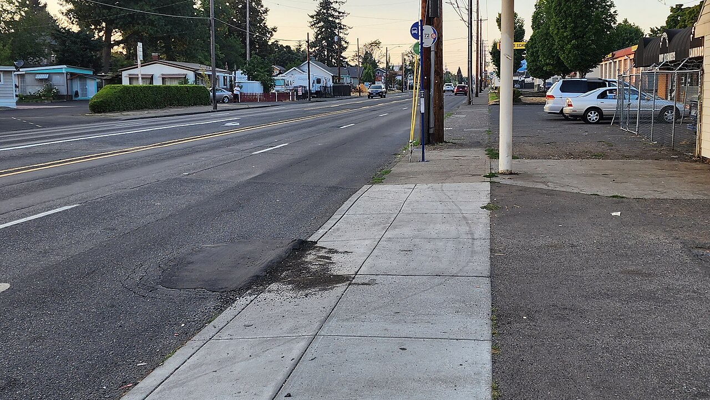

See a hazard? Report it in one tap, the city handles the rest.
Help keep your streets safe. Snap a photo of a pothole, a crack, or any broken piece of pavement and send it in. A detector in your browser plus a multi-agent AI pipeline on the municipal server classify the damage, cross-check it against the current repair standards, and either queue it for regular maintenance or escalate it to a supervisor. Every report is tracked, every verdict a supervisor sees is grounded in a specific procedure, and a human always has the final say before any crew is dispatched.











How it works
Three moving parts, all working together.
Snap a photo in the browser
Open the site on your phone, point the back camera at the hazard, or upload a photo you already took. A YOLOv8 object detector trained on the RDD2022 road-damage dataset runs on your device using onnxruntime-web and finds the four pavement defect types the municipality cares about: longitudinal cracks, transverse cracks, alligator cracking and potholes. The photo is sent to the city server with your report so a supervisor can see what you saw.
5 AI agents triage your report
On the server, a pipeline of five cooperating agents, each running a different open-source language model, analyses the report: an intake agent reads your description, a perception agent interprets the detector output, a research agent looks up the matching municipal repair standard, a decision agent picks one of four actions, and a supervisor agent short-circuits obviously-hard cases straight to a human. The whole chain is logged step by step.
Humans stay in the loop
The agent recommends: urgent dispatch (crew notified now), standard queue (routine maintenance), needs more evidence (we ask you for one more photo) or human review (a municipal supervisor decides). Nothing is ever dispatched automatically. Every urgent and human-review case is a recommendation the supervisor must approve, and the approval is tracked against the case for accountability.
What RoadGuard sees
Four classes from the RDD2022 benchmark - the four most common pavement defects in city streets.
Longitudinal crack (D00)
A crack running along the road's travel direction. Usually caused by poor joint construction or temperature stress. Early repair is cheap; left untreated, water seeps in and the pavement fails.
Transverse crack (D10)
A crack running across the travel direction. Often starts at a construction joint or reflects a crack in the base layer. Routine maintenance queue when caught early.
Alligator cracking (D20)
Interconnected cracks forming a scaly pattern - the pavement's base layer is failing. Typically needs partial-depth patching before it becomes a pothole.
Pothole (D40)
A localized hole where surface material has broken away. The most dangerous class for vehicles and cyclists - on a main road with lane obstruction, this is an urgent-dispatch case.
The labelled dataset behind every verdict
The detector and the agent reasoning are grounded in a public, academic road-damage corpus. Nothing is hand-waved.
17,099 labelled images
The RDD2022 (Road Damage Detection 2022) training set, split into 14,346 train / 1,265 val / 1,488 test. Every image carries YOLO-format bounding boxes for the four defect classes the municipality acts on. The entire catalogue is loaded on the city server so a submitted photo can be fingerprinted against known cases in milliseconds.
Four defect classes, one shared vocabulary
D00 longitudinal crack - along the lane. D10 transverse crack - across the lane. D20 alligator cracking - interconnected network, a structural warning sign. D40 pothole - localised break-up of the surface. Same ids the detector, the agents, the operator pages and the municipal playbook all speak.
Open and auditable
RDD2022 is a published academic dataset; a new photo that matches a catalogued one is marked known_image and reused instead of being retriaged from scratch. The dataset lives on the municipal server, versioned and queryable - no third-party upload, no labelling pipeline hidden behind a vendor.
My reports
Hazards you reported from this account, newest first. Status reflects where the case is in the municipal queue.
| Reported | Defect | Road type | Priority | Agent decision | Status |
|---|---|---|---|---|---|
| Sign in to see your reports. | |||||
Frequently asked
Who sees my photo?
Only the municipal operations team, through a private page gated to the city's internal network. The photo is kept for 7 days on the city server for comparison and then deleted automatically.
Will something actually get fixed?
RoadGuard is a decision-support tool. It routes your report to the right queue and gives the supervisor the context to decide. The actual fix is a work order the municipality dispatches - we show you the agent's recommendation and the case reference, nothing more is promised.
Why does it take 1-3 minutes for the verdict?
The AI agents run entirely on local open-source models (no cloud API bill) on a modest ARM server. Each agent takes 5-30 seconds. Your part finishes in seconds; the server works in the background and the page updates when the verdict is ready.